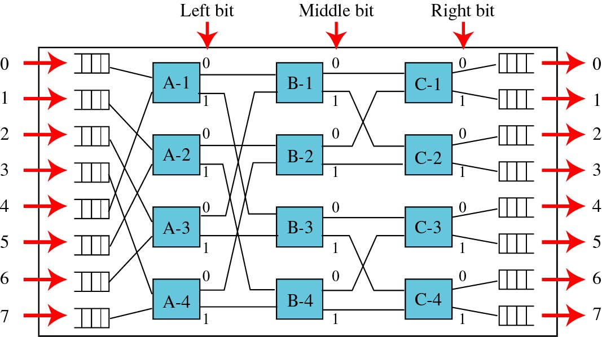

第二章：网络体系结构
- 通信模型
- 源系统（源点，发送器），传输系统，目的系统（接收器，终点)
- 传输方式
- 单工：一个信道，只能单向
- 半双工：一个信道，同一时间只能上/下行，有选择器
- 全双工：两个信道，同时上下行
- 数字通信与模拟通信
- 数字系统：数字-数字编码，模拟-数字编码
- 模拟系统：模拟信号以固有频率基带传输（不编码），频谱搬移后传输（模拟-模拟编码）
- 混成系统：同一系统既包含模拟也包含数字
- 网络体系结构：TCP/IP
- 应用层，传输层，网际层，数据链路层，物理层
- 套接字及其类型
- 流套接字：TCP：可靠，按时
- 数据包套接字：UDP：快速乱序无保证
- 原始套接字：IP：直接访问底层
第三章：数据传输
- 概念与术语
- 导向媒体：电磁波沿某一物理路径前进（光纤，双绞线，同轴电缆
- 点对点：直连链路
- 多点：共享
- 非导向媒体：无线传输，不引导传输方向（空气，真空，海水
- 导向媒体：电磁波沿某一物理路径前进（光纤，双绞线，同轴电缆
- 数据与信号
- 数据：信源产生，可能为模拟或数字
- 信号：经过调制，电磁信号居多
- 周期信号的傅里叶级数表示
- 傅里叶表示：
$$x(t)=\frac{A_0}{2}+\sum_{n=1}^{\infty}(A_n\cos(2\pi nf_0t)+B_n\sin(2\pi nf_0t))$$
$$A_n = \frac{2}{T}\int_{0}^{T}x(t)\cos(2\pi nf_0t)dt$$
$$B_n = \frac{2}{T}\int_{0}^{T}x(t)\sin(2\pi nf_0t)dt$$ - 方波的傅里叶表示
$$f(x)=\frac{4}{\pi}\sum_{n=2k-1}^\infty \frac{1}{n}\sin(\frac{n\pi x}{L})$$
- 傅里叶表示：
- 信号功率计算
- 任意时段功率：
$$P_x=\frac{1}{t_2-t_1}\int_{t_1}^{t_2}|x(t)|^2dt$$ - 周期平均功率
$$P=\frac{1}{T}\int_{0}^{T}|x(t)|^2dt$$
- 任意时段功率：
- 信号的频谱与带宽
- 频谱：信号的频率范围
- 绝对带宽：频谱宽度，最大减最小
- 有效带宽：包含绝大多数能量的带宽，某频率区间的功率积分是总功率的一半（-3dB）
- 直流分量：频率为0的部分
- 方波数据率与带宽的关系
- $R_b=2f$，$R_b$数据率，$f$方波频率
- 模拟/数字数据与模拟/数字传输
- 模拟信号：放大器
- 数字信号：转发器
- 数字信号传输的优势
- 大规模集成电路
- 数据完整性
- 容量利用率
- 安全和保密
- 综合性、存储
- 传输损伤
- 衰减：放大器与转发器解决
- 要求: 接收到的信号足够强, 信号电平高于噪声电平
- 失真
- 衰减失真：高频失真多，衰减均衡和高频高倍放大解决
- 时延失真：中心频率附近传输快，仅限数字信号，码间串扰
- 噪声
- 信噪比：$SNR_{db}=\lg{\frac{S}{N}}$
- 热噪声：$N_0=kT$，$k$玻尔兹曼常量，$T$热力学温度, 每赫兹噪声, 计算时$N=BN_0$
- 互调噪声、串扰（双绞线扭绞）、冲激噪声
- 衰减：放大器与转发器解决
- 信道容量：最大数据传输速率
- 数据率bps，带宽Hz，噪声，误码率
- 奈奎斯特带宽：信道无噪声时：$C=2B\log_2{M}$，$M$指信号的电平数
- 香农容量公式：只有热噪声时：$C=B\log_2(1+SNR)$，$SNR=10^{0.1SNR_{db}}$为信噪比
第四章：传输媒体
- 光纤
- 优势：容量大，体积小，衰减小，电磁隔离，转发器间隔远
- 折射率分类：
- 阶跃型：折射率阶跃，会有失真
- 渐变型：光路周期性汇聚
- 模式分类
- 单模、多模
- 无线传播：高频天线小
- 地波：-2MHz
- 天波：2MHz-30MHz
- 视距传播：30MHz-
- 视距传播损伤
- 自由空间损耗模型
$$L=10\lg(\frac{4\pi d}{\lambda})^2dB$$
- 自由空间损耗模型
第五章：信号编码技术
- 编码与调制技术
- 数字信号传输：数字或模拟数据->(编码器)->数字信号->(解码器)->原数据
- 模拟信号传输：数字或模拟基带信号<->(调制解调器)<->模拟信号
- 数字信号编码格式
- NRZ-L：高电平0，低电平1
- NRZI：区间起始无变化0，区间起始有变化1
- 双极性AMI：零电平0，正电平负电平1交替出现
- 伪三进制：正电平负电平0交替出现，零点平1
- 曼彻斯特：区间正中高到低0，低到高1
- 差分曼彻斯特：区间正中总是变化，区间起始变化0，区间起始不变1
- 扰码
- 扰码产生替代连续电压的序列
- 填充序列：提供足够的信息用于同步，可被识别替换还原，长度相同
- 目标：不含直流，定时信息丰富，不降低数据率，可检错，易于判断还原
- HDB3：会给出编码方式
| 自上一次替换后双极性 | 脉冲（比特1）数 | |
|---|---|---|
| 前面脉冲的极性 | 奇数 | 偶数 |
| - | 000- | +00+ |
| + | 000+ | -00- |
- 调制技术：开关键控载波
- 振幅ASK：01由振幅表示
- 相干解调：乘上同周期的信号，低通滤波
- 频移FSK：不同频率表示01
- 应用：话音，高频无线电（天波，同轴电缆局域网
- 相移PSK：不同相位表示信息
- 二进制相移键控：$0,\pi$
- QPSK：四个相位，$\pm\frac{\pi}{4},\pm\frac{3\pi}{4}$
- 正交调幅QAM：两个载波正交（差90相位，分别ASK，两个独立信号
- 补点公式：
- ASK，PSK
$$B_T=(1+r)R$$ - FSK
$$B_T=2\Delta f+(1+r)R$$ - MPSK
$$B_T=\frac{1+r}{\log_2M}R$$ - MFSK
$$B_T=\frac{(1+r)M}{\log_2M}R$$
- ASK，PSK
- 振幅ASK：01由振幅表示
- 模拟数据数字化
- 脉码调制PCM
- 定时采样，每次采样有几个bit进行量化
- 压扩函数：非线性编码，振幅低的地方密集
- 增量调制DM
- 近似信号的导数，有过载噪声
- 脉码调制PCM
- 模拟调制系统
- 模拟数据加载到载波，利于传输，允许频分复用，扩展带宽，抗干扰
- 调幅AM
- 数据与载波相加
$$s_{AM}=[A_0+m(t)]\cos\omega_ct$$
归一化，小于1时可以包络解调，否则只能正交解调
$$s(t)=[1+n_ax(t)]\cos2\pi f_ct, n_a<1$$
- 数据与载波相加
- 调频FM
$$s(t)=A_c\cos[2\pi f_c+\varphi(t)],\varphi’(t)=n_fm(t)$$ - 调相PM
$$s(t)=A_c\cos[2\pi f_c+\varphi(t)],\varphi(t)=n_pm(t)$$
与FM转化：频率可定义为相位变化率，因此将PM后面的积分即可得到FM
第六章：差错检测与矫正
- 奇偶校验
- 偶校验：末尾加校验比特，整个字符中的1的个数为偶数
- 因特网校验和
- 两个数字视为无符号二进制整数，相加，高位进位就在最低位加1
- 循环冗余检验CRC
- k位信息，生成n-k位比特，作为检验序列（会给出公式，公式最高位$X^{n-k}$
- 块码原理
- 2k+1的距离，最多检2k=$d_{min}-1$，最多纠k=$\lfloor\frac{d_{min}-1}{2}\rfloor$
- 冗余度：(n-k)/k，码字共n位，k个信息位
- 编码率：k/n
第七章: 数据链路控制协议
帧传输模型
性能指标
| 名称 | 描述 | 详述 |
|---|---|---|
| 传输时延 | 数据量 ÷ 数据率 | emit all bits into medium |
| 传播时延 | 介质一段到另一端 | a bit to traverse the link |
| 处理时延 | 单节点时延 × 途径节点数 | the recipient or intermediate node processing |
| 排队时延 | Σ此前耗时 | waiting time at the queue |
流量控制
停止等待流量控制
流程
- 源点发送帧
- 终点收到帧, 回复ACK
- 原点收到ACK, 发送下一帧
- 终点不发ACK终止流
数据切分成小数据块传输
- 接收方缓存有限
- 便于错误重传
- 避免一个站点长时间占用传输媒体
计算题
- 链路比特长度
数据率$R/bps$, 距离$d/m$, 传播速度$v/ms^{-1}$
$$B=R\times\frac{d}{v}$$ - 传播时延(归一化值)
链路比特长度$B/b$, 帧长度$L/b$
$$a=\frac{t_{prop}}{t_{frame}}=\frac{d/v}{L/R}=\frac{B}{L}$$ - 链路利用率
传播时延(归一化值)$a$
$$U=\frac{t_{frame}}{t_{all}}=\frac{t_{frame}}{2t_{prop}+t_{frame}}=\frac{1}{1+2a}$$
- 链路比特长度
滑动窗口流量控制
流程
接收端缓存大小 W
发送端在没有收到ACK前可以发送W个帧
每个帧通过序号来标识, 序号大小受字段长度限制(k bits)帧以 2 k 为模编号($0\to 2^{k}-1$)
ACK(RRx)包含下一个期望收到的帧编号x优化
- 接收端可发送RNR, 切断对方的帧流
- 之后, 接收端必须通过一个正常的确认帧来重启
- 双向链路捎带: 没数据有确认就单发ACK, 有数据有确认就捎带, 有数据没确认就发重复的确认
计算题
- 链路利用率
窗口宽度$W$, 传播时延(归一化值)$a$
$$U=\begin{cases}
1 & W \geq 2a + 1\\
\frac{W}{2a + 1} & W < 2a + 1
\end{cases}$$
- 链路利用率
差错控制
- 自动请求重传ARQ
差错检测 肯定确认 超时重传 否定重传
停止等待ARQ Stop and Wait
- 基于停止等待流量控制
- 保持一个发送帧的拷贝, 在终点确认返回前, 源点不发送其他帧
- 帧损伤
- 接收端检测到差错, 丢弃该帧？
- 发送端超时重传
- ACK 损伤
- 发送端超时重传
- 接收端收到用两份相同编号的帧
Go-Back-N ARQ
- 基于滑动窗口流控机制, 没有收到确认的帧的最大数目取决于窗口大小
- 无错误: ACKx表示准备接收x号帧
- 有错误: REJx表示x号帧错误, 重传x及其后的所有帧
- ACK(RR) 损伤: 下一个ACK可能在超时前到来, 那么无影响; 否则发送”ACK with P bit set”重置
- REJ 损伤: 接收端将其作为丢失帧, 计算超时
选择拒绝ARQ Selective Reject
- 仅重传拒绝帧或超时帧, 后续帧被接收端接收并缓存起来
对比
| ARQ | 最大窗口大小(n bit 序号) | 发送端缓存大小 | 接收端缓存大小 |
|---|---|---|---|
| Stop-Wait | 无窗口, 无序号 | 无 | 无 |
| Go-Back-N | $2^n-1$ | 窗口大小 | 无 |
| Sel-Rej | $2^{n-1}$ | 窗口大小 | 窗口大小 |
HDLC
- 站点类型
- 主站: 负责链路控制操 命令
- 从站: 在主站的控制下操作 响应
- 混合站: 结合了主站和从站的特点
- 链路设置
- 非平衡设置 1 个主站, 多个从站
- 平衡设置 2 个混合站组成
- 数据传送方式
| 数据传送方式 | 链路设置 | 传输发起 |
|---|---|---|
| 正常相应方式NRM | 非平衡设置 | 主站发起, 从站收到主站命令才能传输 |
| 异步平衡方式ABM | 平衡设置 | 混合站均可发起, 应用最广泛 |
- 帧结构
同步传输, 以帧的形式进行, 一个帧格式满足控制和交换
| Flag | Address | Control | Information | FCS | Flag |
|---|---|---|---|---|---|
| 8 bit | 8 bit extendable | 8 or 16 bit | variable | 16 or 32 bit | 8 bit |
第八章: 复用
FDM 频分复用
- 概念: 多个信号调制到不同的载波频率上, 且有足够间隙防止其带宽重叠, 以同时运载
- 信道: 每个信号占有的频率范围
- 防护频带: 载波频率中, 信道之间未被占用的部分
- 流程
载波$m_i(t)$ —> 副载波$s_i(t)$ —> 基带$m_b(t)$ —> FDM信号$s(t)$
FDM信号$s(t)$ —> 复合基带$m_b(t)$ —> 副载波$s_i(t)$ —> 载波$m_i(t)$ - WDM 波分复用
| 复用类型 | 关键设备 | 复用原理 | 介质 |
|---|---|---|---|
| FDM 频分复用 | 调制解调器 | 载波频率 | |
| WDM 波分复用 | 棱镜 | 光波长 | 光纤 |
Synchronous TDM 同步时分复用
- 概念
- 可以用于数字信号或模拟信号传输数字数据
- 数据被组织成”帧“: 每帧包含一组循环使用的时隙;
- 每个数据源可以被分配一个或多个时隙(较快的设备), 在扫描时分配
- 间隔可以是比特级. 也可以是字符级或更大的粒度
- 同步时分复用中同步是指时隙被提前分配给数据源, 且是固定的
- 流程
数据$m_i(t)$ —> 数据$m_i(t)$ —> TDM流$m_c(t)$ —> 经调制的TDM流$s(t)$
经调制的TDM流$s(t)$ —> TDM流$m_c(t)$ —> 数据$m_i(t)$ —> 数据$m_i(t)$ - 链路控制
- 不需要链路控制, 数据流无头尾
- 数据率是固定的, 没有信息将发送空时隙
- 差错控制: 基于单信道的差错控制
- 组帧
- 无需为帧定界, 但需源宿同步
- 增加数字组帧: 每个TDM帧附加一个控制比特
- 同步搜索模式：接收器将接收到的帧中的比特位与预期的模式相比较, 直到这个模式在多个帧里持续传输
- 脉冲填充: 同步不同数据率的源
- 数字载波系统
- 概念
- 每一源有一缓存, 填满时作为一帧发送
- 根据需求分配时隙, 解决空时隙和浪费问题
- 电缆调制解调器
- 有线电视网访问Internet
- 信道
| 用户到网络数据 | 电视节目 | 网络到用户数据 |
|---|---|---|
| 5-40MHz | 50-550MHz | 550-750MHz |
| 话音POTS | 上行流 | 下行流 |
|---|---|---|
| 0-20kHz | 25-200kHz | 250-1000kHz |
- 更多xDSL
- HDSL: 高数据率数字用户线路, 两根双绞线
- SDSL：单线数字用户线路
- VDSL：甚高数据率数字用户线路
第九章: 交换
电路交换
- 概念
- 公共电话网PSTN, 为话音通话开发, 也能处理数字数据
- 流程
- 建立通路, 通信, 断开通路
空分交换
- Crossbar Switch Fabric
- 两两交叉, $n$入$n$出, 将有$n^2$个交叉点, 而至多用$n$个交叉点
- 非阻塞
- 3-Stage Space Division Switching
| 第一级 | 第二级 | 第三级 |
|---|---|---|
| $\frac{N}{n}$个$n\times m$单元 | $m$个$n\times n$单元 | $\frac{N}{n}$个$N\times m$单元 |
$m\geq 2n - 1$时非阻塞, 否则阻塞
Banyan Switch
- 利用输入端的二进制编码来构建多层空分交换, $N = 2^k$, 则共有$k$层, 每层$2^{k-1}=N/2$个$2\times 2$单元
- 每层接线按照输入端二进制编号的各位连接
- $N=8$, 是三级空分交换, 此时算得非阻塞
分组交换
- 概念
- 数据交换, 大数据段分为较小的数据包, 数据包包括用户数据和控制信息
- 包途径多个节点, 在节点处被缓存, 链路可用将被发送
数据报交换
- 概念
- 每个数据包被当作单独的数据包对待, 独自寻路, 不受此前包的影响
- 特性
- 无建立时间
- 灵活
- 可靠
虚电路交换
- 概念
- 先建立路径(虚拟), 此后发送数据包均按此路径发送
- 特性
- 网络可提供排序和错误控制(包按序发送)
- 传送速度更快(无需选择路由)
- 较不可靠
异步传输模式ATM
- 概念
- 信源: 小的, 固定长度的分组, 减小时延
- 面向连接的分组交换技术: 提供类似电路交换网络的性能, 同时有提供分组交换的灵活性和效率
- 数据率: 高
- 支持数据, 话音, 视频
- 传输: 基于优先级和QoS(服务质量), 用户可选择服务等级
- ATM逻辑连接
- 性能分析
| 交换方式 | 建立时间$t_{build}$ | 实际传输的数据$L’$ | 传输时间$t_{trans}$ | 节点延迟$t_{delay}$ | 总时间$t$ |
|---|---|---|---|---|---|
| 电路交换 | $S$ | $L$ | $\frac{L}{B}$ | $DN$ | $S + DN + \frac{L}{B}$ |
| 数据报交换 | $0$ | $P\lceil\frac{L}{P-H}\rceil$ | $P\lceil\frac{L}{P-H}\rceil/B$ | $DN$ | $DN + P\lceil\frac{L}{P-H}\rceil/B$ |
| 虚电路交换 | $S$ | $P\lceil\frac{L}{P-H}\rceil$ | $P\lceil\frac{L}{P-H}\rceil/B$ | $DN$ | $S + DN + P\lceil\frac{L}{P-H}\rceil/B$ |
第十章: 蜂窝无线网络
蜂窝无线网络的概念
- 蜂窝构成
- 区域被分为蜂窝
- 蜂窝使用低功率发送器: 100W以下, 控制功率防止频率逃逸
- 每个蜂窝一个基站: 发送, 接收, 控制单元
- 相邻蜂窝频率不同: 防止干扰
- 蜂窝形状为六边形: 蜂窝半径为$R$, 则相邻蜂窝中心距离$\sqrt{3}R$
- 频率重用
- $D$: 使用相同频率的蜂窝(同波道)中心之间的距离
- $R$: 蜂窝半径
- $d$: 相邻蜂窝中心之间的距离
- $N$: 重复模式中的蜂窝数量, 重用系数, 其可能值仅有这些
$$N=I^2+J^2+(I\times J)\quad I,J\in\mathbb{N}$$ - 有以下关系式
$$\frac{D}{R}=\sqrt{3N}$$
- 增大容量
- 添加新信道: 建立时不会用完全部的信道, 添加新信道满足扩张
- 频率借用: 拥塞的蜂窝可以从邻近的空闲蜂窝借用频率, 也可动态指派频率给各个蜂窝
- 蜂窝分裂: 大蜂窝在使用率高的地区分裂为小蜂窝, 其功率低覆盖面积小
- 蜂窝扇区化: 定向天线, 蜂窝被划分为楔形扇区, 指派蜂窝频率的一个真子集
- 微蜂窝: 功率和覆盖范围超小的蜂窝, 建筑物内, 公路旁, 城市街道等\
蜂窝系统的操作
- 信道
- 控制信道: 交换 建立与维持呼叫的信息
- 业务信道: 承载用户之间话音或数据的连接
- 呼叫典型步骤 MTSO
| 功能 | 描述 |
|---|---|
| 移动单元初始化 | 定期扫描, 选择使用最强的基站建立控制信道, 并与控制该蜂窝的MTSO握手, 之后监听是否有寻呼 |
| 移动台发起的呼叫 | 移动单元通过在已选的建立信道上, 若信道空闲, 发送被叫单元的号码来发起呼叫 |
| 寻呼 | MTSO根据被叫号码, 向某些基站发送寻呼信息 |
| 呼叫接收 | 被叫单元识别寻呼, 向基站发通知 -> 基站向MTSO发通知 -> MTSO建立电路, 选两个业务信道, 通知两个基站 -> 基站通知单元 |
| 呼叫进行中 | 话音或数据信号: 单元 <-> 基站 <-> MTSO <-> 基站 <-> 单元 |
| 切换 | 移动单元跨蜂窝移动, 业务信道切换到指派给新蜂窝的业务信道, 不警告用户 |
| 呼叫阻塞 | 没有空闲业务信道, 将重试数次, 耗尽次数返回忙音 |
| 呼叫终止 | 用户挂机, MTSO得到通知, 释放业务信道 |
| 呼叫掉线 | 信号强度低于最小信号强度, MTSO将得到通知, 释放信道 |
| 连接固定用户 | MTSO与公用电话交换网络连接 |
| 连接远程用户 | MTSO通过电话网或专用线路, 与远程MTSO连接, 并为二者用户建立连接 |
移动无线电传播效应
- 信号强度
- 太强: 同信道干扰
- 太弱: 不足以维持连接
- 衰落
移动环境中的衰落
- 三种重要的传播机制
- 反射
- 衍射
- 散射
- 多径传播效应
- 主脉冲 -> 主脉冲+多个副脉冲: 相当于噪声
- 衰落的类型
| 类型 | 描述 |
|---|---|
| 快衰落 | 振幅的变化也高达20一30dB这种类型的迅速衰落变化 |
| 慢衰落 | 接收功率除了出现快速波动之外, 接收到的平均功率水平也会变化 |
| 平坦衰落 | 接收信号的所有频率成分的波动是同时的且成相同比例的 |
| 选择性衰落 | 对一个无线电信号的不同頻谱成分的影响是不同的 |
四代蜂窝网络
| 技术 | 最初设计时间 | 应用时间 | 服务 | 数据率 | 复用技术 | 核心网络 | 更多 |
|---|---|---|---|---|---|---|---|
| 1G | 1970 | 1984 | 模拟话音 | 1.9kbps | FDMA | PSTN | |
| 2G | 1980 | 1991 | 数字话音 | 9.6kbps-14.4kbps | (GSM)TDMA, CDMA | PSTN | EDGE, 均衡, 交织, RAKE接收, 功率控制 |
| 2.5G | 1985 | 1999 | 大容量分组化数据 | 384kbps-2Mbps | TDMA,CDMA | PSTN, 分组网络 | 多用户检测, 智能天线, Turbo 编码, 多媒体数据 |
| 4G | 2000 | 2012 | 完全基于IP | 20~100Mbps-1Gbps | OFDMA, SC-FDMA | IP干线网 | 自适应调制编码, 混合自动重传, MIMO |
LTE-Advanced 传输特性
- FDD与TDD
- FDD: 成对的上下行信道, 中间有保护频带
- TDD: 同一频带, 时域上交替
- 载波聚合
- 带内连续: 相邻的信道被看作被放大的信道
- 带内不连续: 多个分量载波CC在带内不连续, 需要多个收发器
- 带间不连续: 多个收发器